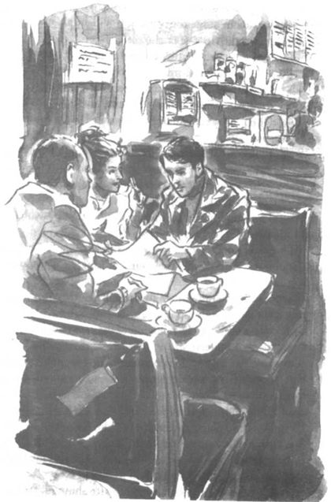

Listen to Part 1:
Tom and Rita met Mr Spooner in a cafe called Big John’s.
‘I’m sorry that we can’t meet in my office,’ said Mr Spooner. ‘It’s being cleaned and redecorated at the moment. But it’s nice and clean in here. And the food is good.’
Tom looked around him. The cafe didn’t look clean to him. Big John’s smelt of cigarettes and cooking oil. There were dirty plates on many of the tables.
‘We don’t mind, do we, Tom?’ said Rita.
‘No, I don’t think so,’ said Tom slowly.
Mr Spooner was about forty. He had a bald head and a thin moustache. His suit was made of thin, shiny material and he wore a lot of gold jewellery.
‘I know everyone in the fashion business,’ he said. ‘And I promise that you will be a top fashion model.’
Mr Spooner talked about the money Rita was going to earn. He spoke quickly and moved his hands a lot.
‘In two years,’ he said, ‘you’ll have a big house and a big car. Maybe a swimming pool.’
Tom listened in amazement. On the juke-box a song called Smooth Operator was playing. A smooth operator-a man who tricked people with clever words! That was Mr Spooner all right, thought Tom.
Listen to Part 2:
But Rita was delighted. At last, someone was telling her that she was going to be a model.
‘What do I have to do?’ asked Rita.
Mr Spooner looked very serious. ‘It takes a long time to become a model. My fee for training you to become a model is £300. But when you start work with me you won’t earn much money. Your first job will be to make coffee and sweep the floor of the office.’
Tom was very worried now, but Rita said, ‘That’s all right. I’ve got the money. I can pay you the £300.’
Mr Spooner held out some papers. ‘Rita, here is a contract for you to sign. Tom, you will be a witness. You must sign the contract too. This is to say that Rita is going to work for me.’
Rita wanted to sign the contract immediately, but Tom stopped her. He picked up the contract and tried to read it. The writing was small and the words were difficult.
‘I don’t understand this contract,’ said Tom. ‘I would like to take it home and read it carefully. We’ll meet you again tomorrow.’
‘There are a lot of girls who want to be models,’ said Mr Spooner. ‘And I’m a busy man. I can’t wait until tomorrow.’
‘Please sign the contract, Tom,’ said Rita. ‘All I want to do is become a model. This is my big opportunity.’
Tom was not happy. He did not want to sign something he did not understand.
Listen to Part 3:
‘I’m sorry,’ he said to Mr Spooner, ‘but I want to speak to Rita alone. Rita, please come outside with me for a moment.’
Rita followed him out of the cafe. She was very angry.
‘Why won’t you sign the contract?’ she shouted.
‘Because I don’t trust this Mr Spooner,’ said Tom. ‘I don’t believe what he says. I don’t think that he can help you become a model.’
‘You don’t want me to be a model!’ Rita shouted. ‘You don’t want me to be successful.’

Rita wanted to sign the contract immediately, but Tom stopped her.
‘All right!’ said Tom. His face was now red with anger. ‘I’ll do what you want. But I think you’re a fool!’
They went back into the cafe again. Rita signed the contract. Then Tom signed the contract.
‘Write your address, please,’ said Mr Spooner to Tom.
Listen to Part 4:
Tom did not want to give Mr Spooner his address. He did not trust Mr Spooner. So he wrote down the address of the library. Mr Spooner handed Rita another piece of paper. ‘You must go to this address tomorrow morning. Bring the £300 with you. A friend of mine will tell you about your work.’
Mr Spooner pointed to the contract that Rita had signed.
‘You are now working for me,’ he said. ‘Nobody else can take photographs of you.’
‘What?’ said Tom. He was beginning to hate Spooner now. ‘I’m Rita’s photographer!’
Mr Spooner shook his head.
‘No, Tom. You aren’t Rita’s photographer now,’ he said. He looked at his gold watch. ‘I must go. I’m very busy. Goodbye.’
Rita and Tom watched Mr Spooner leave the cafe. Then they had another terrible argument.
‘You are stupid,’ said Tom. ‘You only think about becoming a model. Can’t you understand? Spooner is a thief!’
‘So you don’t want me to be a model? You want me to marry Bungo?’ said Rita.
‘You can marry Mickey Mouse if you want!’ said Tom. ‘But I don’t ever want to speak to you again.’
Listen to Part 5:
Rita watched Tom walk away. There were tears in her eyes.